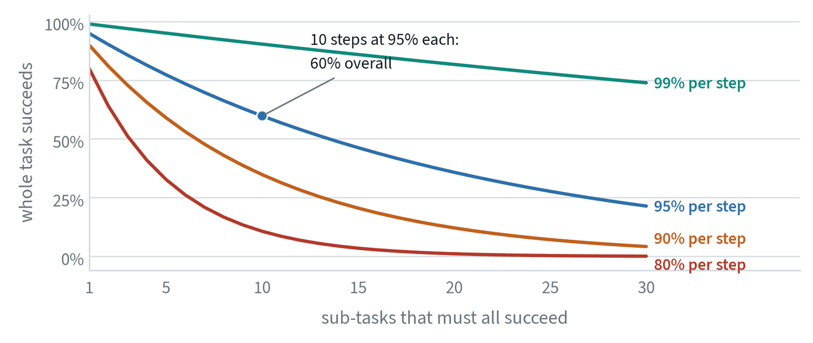
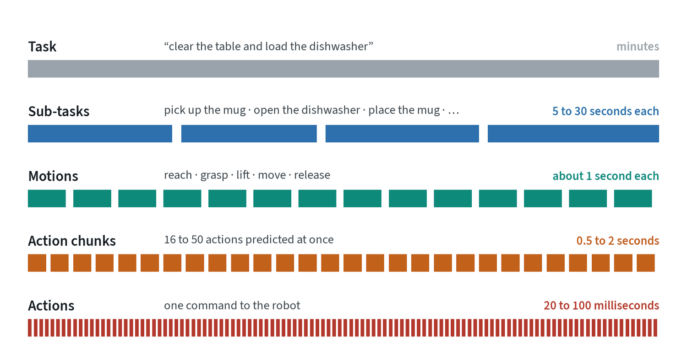
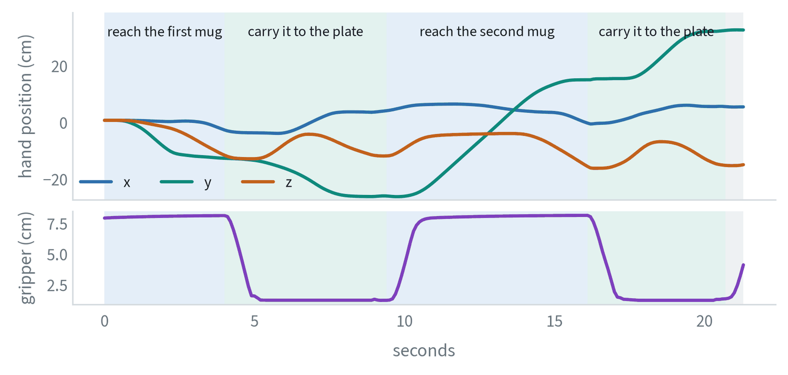
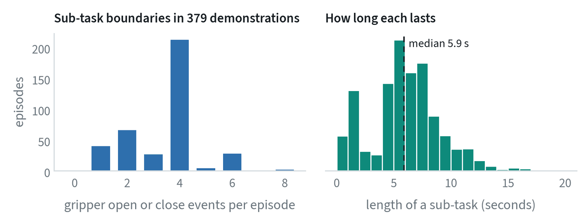
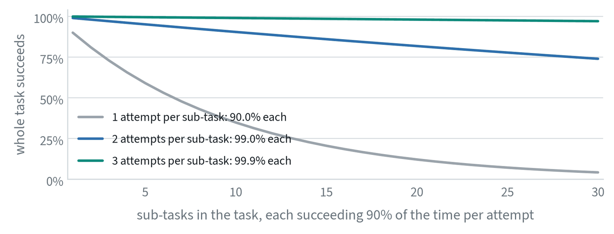
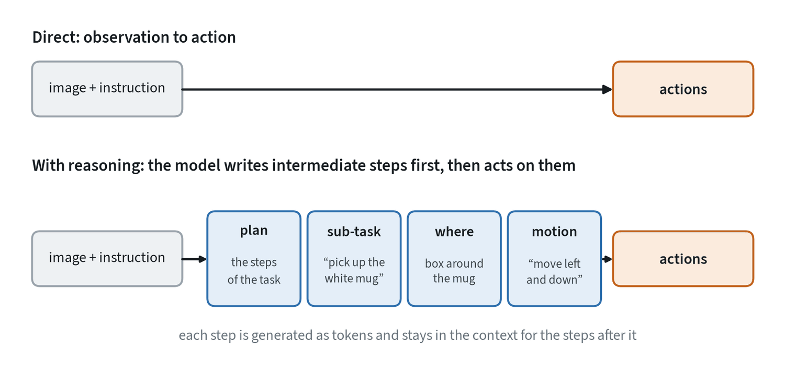

Why long tasks are hard


A policy that succeeds at each step 95% of the time sounds reliable. Chain ten such steps and the task succeeds 60% of the time. Chain thirty and it is 21%. This arithmetic is the central fact about long tasks, and every method in this note attacks it from one of three sides: make each step more reliable, make fewer steps, or recover when a step fails.
Two further problems come with length. The policy has to remember what it has already done, and it sees only the last frame or two. And the instruction no longer describes the next motion. “Clear the table” says nothing about which object to pick up first.
Levels of a task




The second figure is a real demonstration of the instruction “put the white mug on the left plate and put the yellow and white mug on the right plate”. The moments the gripper closes and opens split it cleanly into four sub-tasks. That is the simplest form of sub-task decomposition, and it is free: the boundaries are already in the data.
Sub-tasks in real data


Applied to the whole dataset, the gripper signal gives a picture of what “long horizon” means in a standard benchmark. Most episodes contain four gripper events, which is two pick-and-place sub-tasks. The median sub-task lasts 5.9 seconds and the median episode 26. At 10 actions a second that is roughly 60 actions per sub-task, or four chunks of 16.
These tasks are called long-horizon in the literature and they are two or three sub-tasks long. Household tasks that people consider simple, such as loading a dishwasher, run to dozens.
Action chunks: fewer, larger decisions
The lowest boundary is between single actions and chunks. Predicting a block of future actions in one call shortens the chain directly. The episode above is 214 steps long.
| Actions per chunk | Decisions in the episode | Each chunk covers |
|---|---|---|
| 1 | 214 | 0.1 seconds |
| 8 | 27 | 0.8 seconds |
| 16 | 14 | 1.6 seconds |
| 50 | 5 | 5 seconds |
Fewer decisions mean fewer chances to drift, and a chunk produced in one pass is internally consistent, so motion is smooth. The price is reactivity: within a chunk the policy is not looking. Three refinements manage that trade.
- Execute part, re-plan early. Predict 16 actions, execute 5, and predict again. The plan stays long and the reaction time stays short.
- Blend overlapping chunks. Average the predictions that several successive chunks make for the same moment, which smooths the joins.
- Plan around the delay. Generate the next chunk knowing which of the current actions will already have been executed by the time it arrives.
Chunking solves the problem at the scale of seconds. It does nothing for a task of minutes, which needs the levels above.
Sub-task decomposition
The next boundary up splits a task into sub-tasks, each short enough for a chunking policy to complete reliably. A high-level model names the next sub-task in words, and a low-level policy carries it out. The interface between them is usually plain language, which makes the system’s decisions readable.
| Where the sub-tasks come from | How it works | Trade-off |
|---|---|---|
| Written by hand | A fixed script or state machine lists the steps | Reliable and inflexible; one script per task |
| A language model as planner | Given the instruction and the scene, a language model proposes the next step, often filtered by what the robot can currently do | Flexible; the planner can propose steps the robot cannot perform |
| A vision-language model trained for it | A model fine-tuned on robot data labelled with sub-tasks predicts the next one from the camera view | Grounded in what the robot sees; needs sub-task labels |
| Learned from the data’s structure | Boundaries are found automatically, from gripper events as above or from changes in the scene | Free labels; the segments may not match meaningful steps |
Two details decide whether a hierarchy works. The high level has to know when a sub-task is finished, which needs a success check or a model that watches for completion. And the high level has to be able to re-plan when a sub-task fails, which is where the third weapon against compounding, recovery, comes in. A system that notices a dropped mug and issues “pick up the mug” again turns a failed chain into a longer successful one.
What recovery is worth
If a sub-task succeeds with probability per attempt and can be retried up to times, its effective success rate is


A second attempt turns 90% into 99%, and a task of thirty such sub-tasks goes from succeeding 4% of the time to 74%. No plausible improvement to the low-level policy does as much. This is why failure detection and re-planning are the most valuable parts of a long-horizon system, and why the first question about any such system is whether it knows when a step has failed.
The arithmetic assumes that a failure leaves the world in a state from which a retry is possible. A dropped cup can be picked up again. A spilled one cannot. Irreversible steps deserve their own check before they are attempted.
Chain of thought: reasoning before acting


In language models, chain of thought means having the model write out intermediate steps before its answer. Accuracy improves on problems that need several steps, because each step is produced with the earlier ones in view.
The embodied version asks a robot policy to do the same before each action: state the plan, name the current sub-task, locate the relevant object, describe the motion in words, and only then output the action. The published work on this reports clear gains in success on tasks that need generalisation, with a further benefit that is easy to overlook. When the robot fails, the reasoning shows where it went wrong: the wrong sub-task, the wrong object, or the right intention and a bad motion.
- It needs labels. The reasoning steps must exist in the training data. They are usually generated automatically, with detectors and language models annotating existing demonstrations.
- It costs time. Every reasoning token is generated before the action. Systems reduce this by reasoning only every few steps, or by reusing the high-level parts of the reasoning until the sub-task changes.
- It can be visual. The intermediate step need not be text. Some models predict an image of the goal, or of the next few frames, and act toward that.
- It can be wrong. Fluent reasoning followed by an unrelated action is possible. Check that changing the reasoning changes the action.
Memory
A policy that sees only the present cannot know whether it has already checked a drawer. Four kinds of memory are in use.
- A longer context. Feed more past frames. Simple, expensive, and it invites the shortcut of copying past actions.
- A written log. The high-level model keeps short notes on what has been done, and reads them at each decision.
- Keyframes. Store a few informative past frames instead of all of them.
- A recurrent state. Carry a fixed-size summary forward in time, as the linear recurrent layers in the attention note do.
Memory is the least settled part of long-horizon work. Tasks that depend on something no longer visible remain hard.
How they fit together
| Method | Works at | Fights compounding by | Costs |
|---|---|---|---|
| Action chunks | Actions to motions | Fewer decisions | Reactivity within a chunk |
| Sub-task decomposition | Motions to task | Shorter chains per policy call; a place to re-plan | A second model, and a way to detect completion |
| Chain of thought | Inside one decision | Making each decision more reliable | Time, and labelled reasoning |
| Recovery and retries | Any level | Turning a failure into extra steps instead of the end | A failure detector |
| Memory | Across the task | Avoiding repeated and skipped steps | Context, or added machinery |
Current systems use most of these at once. The note on system architectures covers how the levels are arranged into models that run at different speeds.
Common mistakes
- Quoting per-step success. Report success on the whole task. The chain is what matters.
- Lengthening chunks to fix a long task. Chunks help at the scale of seconds. Minutes need decomposition.
- A hierarchy with no completion check. The high level must know when to move on.
- Assuming the reasoning caused the action. Test it by editing the reasoning.
Terms
- Horizon
- How many steps or how much time a task takes.
- Action chunk
- A block of future actions predicted in one call.
- Sub-task
- One step of a longer task, short enough for a low-level policy to complete.
- Chain of thought
- Writing intermediate reasoning steps before an answer or action.
- Re-planning
- Choosing a new next step after observing the result of the last one.
- Completion detection
- Deciding that a sub-task has finished, successfully or not.
- Effective success rate
- The success rate of a step once retries are allowed.
Further reading
- Zhao et al., 2023. Learning Fine-Grained Bimanual Manipulation with Low-Cost Hardware (action chunking).
- Ahn et al., 2022. Do As I Can, Not As I Say: Grounding Language in Robotic Affordances (SayCan).
- Huang et al., 2022. Inner Monologue: Embodied Reasoning through Planning with Language Models.
- Wei et al., 2022. Chain-of-Thought Prompting Elicits Reasoning in Large Language Models.
- Zawalski et al., 2024. Robotic Control via Embodied Chain-of-Thought Reasoning.
- Belkhale et al., 2024. RT-H: Action Hierarchies Using Language.
- Zhao et al., 2025. CoT-VLA: Visual Chain-of-Thought Reasoning for Vision-Language-Action Models.
- Shi et al., 2025. Hi Robot: Open-Ended Instruction Following with Hierarchical Vision-Language-Action Models.
- Black et al., 2025. Real-Time Execution of Action Chunking Flow Policies.